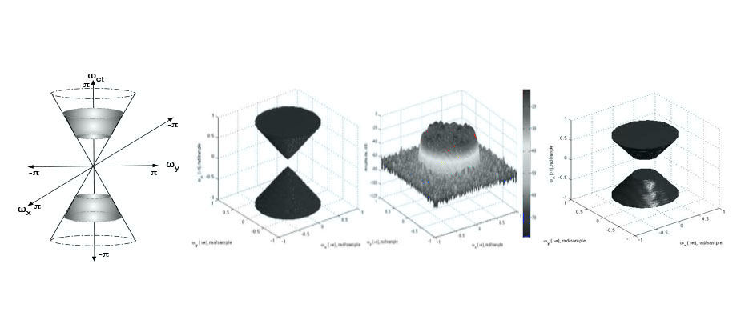
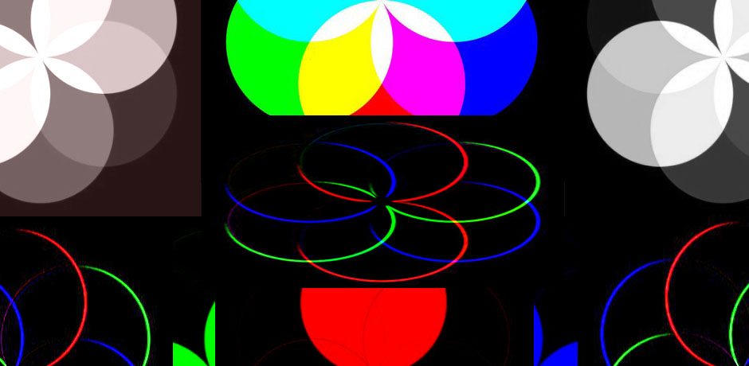
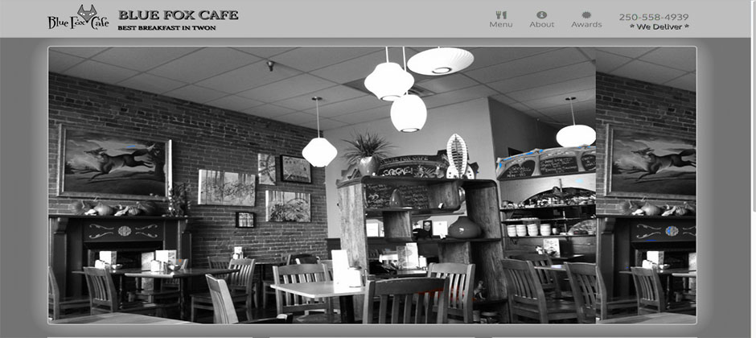

Three-dimensional spatio-temporal cone and frustum filters have been utilized in 3D filtering applications in many areas such as wireless communications, digital video processing, biomedical imaging, and radio astronomy. In these applications, the objectives are to pass or enhance a desired signal, and to reject or attenuate an undesirable signal.
In this project, we further develop two new uniform 3D ST FIR cone filters; moreover, we derive two 3D frustum filters from the two new proposed 3D ST FIR cone filters. Following the filter bank structure in designing 3D ST cone filters, these two 3D ST cone filters are designed by employing well-known 1D uniform filter bank in the temporal domain. To Learn more about the project thoery and implementation please visit.
There are four versions of this project, the first two versions are the implementation in time domain in (C++ and Matlab) where the implementation is achieved in time domain using 1D and 2D convolution. The other two are the implementation in frequency domain in (C++ and Matlab) where we used FFT Fast Fourier Transform to achieve the filtering in 1D and 2D.
Digital image processing deals with manipulation of digital images through a digital computer. It is a subfield of signals and systems but focus particularly on images. DIP focuses on developing a computer system that is able to perform processing on an image. The input of that system is a digital image and the system process that image using efficient algorithms, and gives an image as an output or (image features). The most common example is Adobe Photoshop. It is one of the widely used application for processing digital images. Digital image processing.
Some of the major fields in which digital image processing is widely used are: Image sharpening and restoration, Medical field, Remote Sensing, Transmission and Encoding, Machine/Robot Vision, Color Processing, Pattern Recognition, Video Processing, Microscopic Imaging Applications of Digital Image Processing
In this project, introduction to image understanding, filtering and edge detection of images are presented to learn more about the project and for a demo, please visit this link.
Responsive web design is the practice of enhancing the experience of the user by adapting the web page layout to the device he or she is using when accessing the site. There are several ways to create a responsive web design, media queries being the standard technique.
This project presents the practice of a modern web development using (HTML5, CSS, Bootstrap framework, JavaScript, jQuery, Ajax). In this project, we present a responsive design for a resturant website.To learn more about the project and to test its responsive design, please visit the link.
Responsive web design is the practice of enhancing the experience of the user by adapting the web page layout to the device he or she is using when accessing the site. There are several ways to create a responsive web design, media queries being the standard technique.
This is another project that presents the practice of a modern web development using (HTML5, CSS, Bootstrap framework, JavaScript, jQuery, Ajax). In this project, we present a responsive design for an association website. To learn more about the project and to test its responsive design, please visit the link.
Uniform M-band digital filter banks have various applications in such areas as sub-band coding, image processing, speech processing, radar signal processing, communications, adaptive filtering, and implementation of 3D cone and frustum filters. Many classes of M-band digital filter banks have been designed such as modulated discrete Fourier transform filter banks, modulated modified discrete Fourier transform filter banks, quadrature mirror cosine modulated filter banks, cosine modulated filter banks , and directly-designed filter banks in order to meet the requirements of various applications.